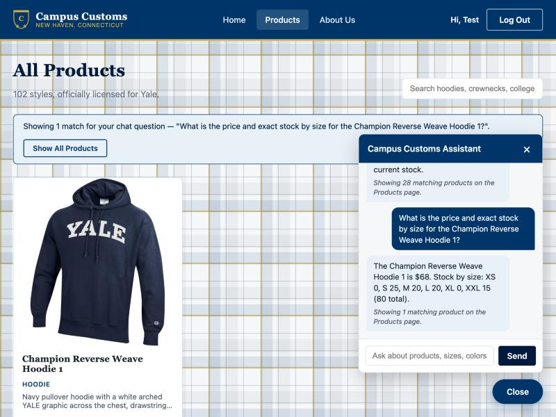
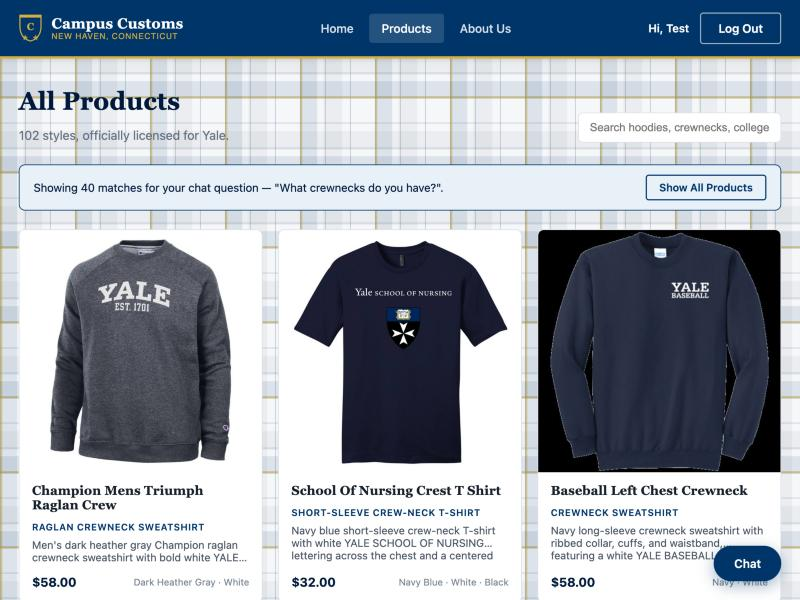
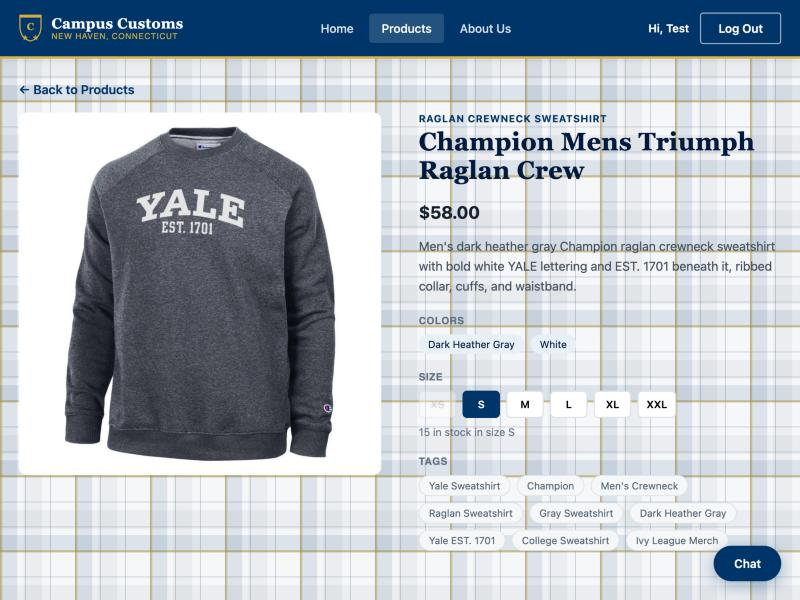
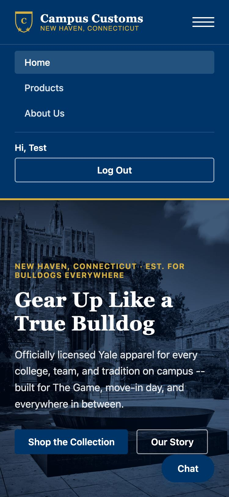

| # | Check | Result |
|---|---|---|
| 1 | Chat returns true DB stock & price for a specific product | PASS |
| 2 | Chat category search → clickable product cards → single product page | PASS |
| 3 | Usability feature (Problem 9): mobile hamburger navigation | PASS |
Check 1 — Chat Inventory & Price Lookup
Asked the chatbot directly for the price and full per-size stock of one catalogue product, then compared its answer against the raw database.
price = 68.0 | XS 0, S 25, M 20, L 20, XL 0, XXL 15 | total = 80

Asked: "What is the price and exact stock by size for the Champion Reverse Weave Hoodie 1?" The assistant replied
"$68. Stock by size: XS 0, S 25, M 20, L 20, XL 0, XXL 15 (80 total)" — an exact match to the catalogue/inventory
rows queried directly above, including the two sizes that are genuinely out of stock (XS, XL), confirming the agent's
get_product/get_stock tools return real data rather than a guess.
Check 2 — Chat Category Search → Product Cards → Single Product Page
Asked the chatbot a category question and confirmed the website itself updates with clickable results, and that clicking one leads to its full product detail page.
2a. Category question produces clickable result cards on the website

Asked: "What crewnecks do you have?" The Products page itself (not just the chat panel) updated to show all 40 real
catalogue matches as full product cards, with a banner confirming they came from the chat question — this is the
API contract from Problem 7, where the agent's structured products list drives the page directly.
2b. Clicking a result card opens that product's single detail page

Clicking the "Champion Mens Triumph Raglan Crew" card from the chat-driven results above opened its full single-item page — large image, price, description, color swatches, and a live per-size stock selector — proving the chat-produced cards use the same click-through built in Problem 3, not a dead end.
✓ Cards appear and link through correctlyCheck 3 — Usability Improvement: Mobile Navigation (Problem 9)
Of the four usability improvements implemented in Problem 9, this check verifies the mobile hamburger navigation added to fix a real dead end (no way to reach the nav links at all on a phone-sized screen before this fix).

At a 375px-wide mobile viewport, tapping the hamburger icon opens a full menu with Home/Products/About Us links plus the signed-in user's greeting and Log Out button — confirming the fix: a shopper on a phone can now actually navigate the site, which the previous CSS (hiding the nav with no replacement) did not allow.
✓ Mobile nav opens and is fully usable